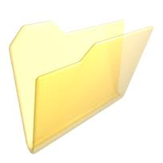

1. Introducción

La práctica de hoy vamos a centrarla en la gestión de dispositivos extraibles (USB) con el ordenador, y la gestión de archivos comprimidos.
2. Descargando imágenes

Para la realización de la práctica, deberemos primero descargarnos al disco duro las imágenes que os pongo a continuación.
- Pulsa con el botón derecho sobre cada imagen.
- Elige la opción "Guardar imagen como..." / "Anomena i desa la imatge..."
- Guarda las 5 imágenes dentro de la carpeta "Imágenes".
{kind=link}
{kind=link}
{kind=link}
{kind=link}
{kind=link}
3. Utilizando el explorador de archivos

Abre el explorador de archivos y visualiza el contenido de la carpeta imágenes.
- Identifica las 5 fotos que te has descargado.
- Pulsa sobre el botón Crear carpeta y crea una carpeta nueva llamada "Imágenes ejercicio"
- Mueve las 5 imágenes dentro de la carpeta "Imágenes ejercicio"
4. Organizando en subcarpetas
Vamos a crear ahora un nivel de anidamiento más en nuestra carpeta.
- Abre el explorador de Windows si no lo tienes abierto ya.
- Accede al contenido de tu carpeta "Imágenes ejercicio".
- Crea dentro de esa carpeta una nueva carpeta llamada "Europa"
- Mueve las 5 imágenes dentro de esta nueva carpeta.
- ¿Cómo ha quedado ahora nuestra estructura de carpetas?
5. Descargar, guardar y más carpetas
Finalmente, si has conseguido realizar todos los pasos anteriores, conéctate a Google, bájate una imagen de las pirámides de Egipto, y guárdala en una nueva carpeta dentro de nuestra carpeta "Imágenes ejercicio" llamada "Africa".